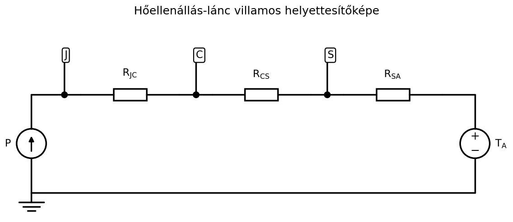

Az adatkártyán az LDO egyik tokváltozata megbukott, mert túlmelegedett volna. Most megtanulod, hogyan számold a hőmérsékletet úgy, mint egy áramkört, és mit tudnak (és mit nem) az adatlap hőadatai. Az alfejezet végére:
Ami ehhez kell: Teljesítmény, energia, hatásfok és mértékegységek, Ellenállás és az Ohm-törvény, Teljesítmény, hőfoktényező, feszültségtűrés és típusok, Tokozások: furatszerelt és SMD, A MOSFET működése és adatlapja, Biztonságos működési tartomány, lavina és induktív terhelés, Teljesítménymérleg, lineáris szabályzó és LDO és Hatásfok, veszteségek, alkatrészválasztás és kapcsolóüzemű zaj.
A 3,3 V-os LDO legrosszabb esetben 0,38 W-ot alakít hővé. Egy 0,38 W kicsinek hangzik, a SOT-23-5 tokban mégis 128 °C-os záróréteget adott 60 °C környezetben. És mi lenne, ha az 5 V-os sínt nem buck konverter, hanem egy lineáris szabályzó állítaná elő a 12 V-os bemenetről? 16 V-nál és 0,5 A-nél W – elfér-e ez egy tokban?
A hő nem tűnik el magától: addig emelkedik a hőmérséklet, amíg ugyanannyi hő el nem jut a környezetbe, amennyi keletkezik.
A hőáramlás úgy viselkedik, mint az elektromos áram:
| Hőtani mennyiség | Villamos megfelelő |
|---|---|
| hőteljesítmény (W) | áram |
| hőmérséklet (°C), különbsége (K) | feszültség |
| hőellenállás (K/W) | ellenállás |
| hőkapacitás (J/K) | kapacitás |
| környezet (állandó ) | feszültségforrás |
A keletkező hő egy „áramforrás”, amely a lapkából (záróréteg, junction, J) a tokon (case, C) és a hűtőbordán (heatsink, S) át a levegőbe (ambient, A) tart. Minden szakasz ellenállást jelent, és rajta hőmérséklet esik. Az analógia korlátai: a konvekció és a sugárzás nem pontosan lineáris, a hő több úton, térben terjed szét, és a hőellenállás a felépítéstől függ – nem az alkatrész egyedi, állandó jellemzője.

Gondolkodj előre: a TO-220 tokot 7 K/W-os hűtőbordára szereljük és bekapcsoljuk. Mikor éri el a záróréteg a végleges hőmérsékletét – ezredmásodpercek, másodpercek vagy percek alatt?
Mindkettő: a lapka kis hőtömege tized másodperc alatt felmelegszik a tokhoz képest, a teljes rendszer viszont a borda nagy hőtömege miatt percek alatt áll be. Egy rövid kipróbálás tehát semmit sem bizonyít a tartós üzemről.
Definíció. A hőellenállás két pont hőmérséklet-különbségének és a köztük átfolyó hőteljesítménynek a hányadosa: , egysége K/W (kelvin per watt; a hőmérséklet-különbségnél 1 K = 1 °C).
Soros láncra:
Szavakkal: a környezet hőmérsékletéhez minden szakasz emelkedést ad. Érvényes állandósult állapotban, ha az összes hő ezen az egy úton távozik. Mértékegység: °C + W·K/W = °C. a záróréteg–tok, a tok–borda (a hővezető anyag), a borda–környezet ellenállása. Ha nincs borda, az adatlap egyetlen értéket ad: .
Megfordítva: a megengedett teljesítmény , a szükséges borda pedig
Ha a jobb oldal negatív, ezzel a tokkal semmilyen bordával nem tartható a határ. itt a tervezési határ: a deratinggel csökkentett érték (Derating, tűrésanalízis és megbízhatóság), a példánkban 125 °C.
Az egy meghatározott tesztlapon, adott kamrában mért érték; a méréskörnyezetet a JEDEC JESD51 szabványsorozat írja le (ellenőrizendő: a hatályos részek). A tesztlap réze, rétegszáma és az átvezetők száma más, mint a tiéd. Ezért az tokok összehasonlítására jó, a te készülékedre csak becslés, amely lényegesen eltérhet.
Miért? A hő több párhuzamos úton megy. Egy leegyszerűsített, kitalált példa: a záróréteg a lábakon át a lapba jut (40 K/W), onnan a levegőbe (); közvetlenül a tok tetején át 300 K/W. A lap hőleadó felülete szabja meg -t: 80 K/W-nál az eredő K/W, 30 K/W-nál K/W. Ugyanaz az alkatrész, más lap – más hőellenállás.
Az a záróréteg és a tok egy meghatározott felülete (alsó vagy felső) közötti ellenállás, úgy mérve, hogy a hő gyakorlatilag mind ott távozik. Hűtőbordás számításhoz való.
Definíció. A (pszi) hőjellemző paraméter: a záróréteg és a tok tetejének hőmérséklet-különbsége az összes disszipációra vonatkoztatva, . Nem hőellenállás, mert a -nek csak töredéke folyik a tetőn át; a mértékegysége mégis K/W.
Ha az XL3300 SOT-23-5 változatának tetején 80 °C-ot mérnél (feltételezett érték), = 0,38 W-nál °C. Aki a helyett a 80 K/W-os értéket használja, 110 °C-ot kap: hibás, mert az feltételezi, hogy az egész teljesítmény felfelé távozik.
A hűtőborda nagy felülettel csökkenti -t; a hővezető anyag (paszta, lap; angolul TIM) a két felület közti légréseket tölti ki, -t adja. Az SMD tokok alján lévő hőleadó felület (exposed pad, Tokozások: furatszerelt és SMD) a nyomtatott lap rezébe viszi a hőt; a termikus átvezetők a lap belső és alsó rézrétegeire továbbítják. Ezek NYÁK-kialakítási kérdések – a kapcsolási rajzon követelményként rögzítjük (például „U1 hőleadó felülete nagy rézfelületre, termikus átvezetőkkel”).
Definíció. A hőkapacitás (J/K): ennyi energia melegíti fel a testet 1 K-nel ( tömeg, fajhő). Egy – pár termikus időállandója (K/W · J/K = s), és a hőmérséklet ugyanúgy közelít a végértékhez, mint a kondenzátor feszültsége (RC és RL töltés–kisütés, időállandó). 30 g alumíniumborda ( J/(kg·K)): J/K, 7 K/W-tal s.
Rövid impulzusnál a hő még nem jut el a környezetig, ezért a záróréteg kevésbé melegszik, mint mutatná.
Definíció. A tranziens hőimpedancia : egy hosszú, nagyságú impulzus végén a záróréteg hőmérséklet-emelkedése osztva -vel: . Ismétlődő impulzusoknál a kitöltési tényező (bekapcsolt idő / periódus) a görbesereg paramétere. Nagy -nél az -hoz tart.
Olvasd le: egyetlen 1 ms-os impulzusra 5,9 K/W, ugyanez 50 %-os kitöltéssel ismételve 65 K/W – a hőnek nincs ideje elmenni az impulzusok között. Az SOA-görbék (Biztonságos működési tartomány, lavina és induktív terhelés) ugyanezt a hőtehetetlenséget tükrözik.
Egy vezeték vagy vezetősáv hőt termel, , ahol a réz Ω·m, és kelvinenként kb. 0,39 %-kal nő. Vezetősávnál ( szélesség, rézvastagság, jellemzően 35 µm). A hőleadás a felülettől, a lap anyagától, a szomszédos réztől és a légmozgástól függ. Elvileg: kétszeres áramnál a veszteség négyszeres, a melegedés legalább ennyivel arányos, mert a melegebb réz ellenállása nagyobb. Szélesebb vagy vastagabb réz: kisebb ellenállás és nagyobb hőleadó felület.
A méretezés eszköze nem ez a modell. A régebbi, ma is sokszor idézett görbék az IPC-2221 szabványból származnak; az újabb IPC-2152 mérésekre épül, és a lap vastagságát, a rézfelületek közelségét és a belső rétegeket is figyelembe veszi (ellenőrizendő: a hatályos kiadás görbéi és korrekciói). Vezetéknél a keresztmetszet szerinti terhelhetőség táblázatai a vezeték szigetelésétől, kötegelésétől és környezetétől függnek. Kapcsolási rajz szinten a feladatod: minden nagyáramú hálózathoz leírni az átlag- és csúcsáramot, a megengedett feszültségesést és melegedést.
Továbbvitt eredmény. A záróréteg-hőmérséklet (soros láncnál az ellenállások összege, impulzusnál ), legrosszabb teljesítménnyel és hőmérséklettel, a deratinggel csökkentett határhoz mérve; az adatlapi csak a tesztlapra igaz. Ezt használja a Követelményektől a blokkdiagramig, a Tervezési átvizsgálás és átadás a NYÁK-tervezésnek, az 1. záróprojekt: védett tápegység 12 V-ról 5 V-ra és 3,3 V-ra és a 3. záróprojekt: MOSFET-es meghajtó induktív terheléshez.
Továbbvitt eredmény. A vezetők melegedése -ből és a hűlésből adódik; a NYÁK-tervezőnek hálózatonként átadjuk az áramigényt és a megengedett esést, a szélességet az IPC-2152 alapján határozza meg (Kapcsolási rajz konvenciói és a NYÁK-tervezőnek átadott kényszerek, Tervezési átvizsgálás és átadás a NYÁK-tervezésnek).
A) LDO. = 0,38 W, = 60 °C. SOT-23-5: °C (> 125). WSON-6: °C. Megengedett teljesítmény: SOT-23-5 W, WSON-6 W. (Tesztlapi adatok: a tényleges lapon ellenőrizni kell.)
B) Lineáris 12 → 5 V TO-220-ban (mintaadat: = 3 K/W, = 0,5 K/W, borda nélkül = 60 K/W). = 5,5 W. Borda nélkül °C – lehetetlen. Szükséges borda: K/W. Egy 7 K/W-os bordával: °C, °C, °C. Megfelel, de a 98 °C-os borda égési sérülést okozhat, és a buck konverter (A buck konverter) a veszteség töredékével oldja meg ugyanezt.
C) Önmelegedő MOSFET. Az MN1 -ja a hőmérséklettel nő (A MOSFET működése és adatlapja), a hőmérséklet viszont a veszteségtől függ. Lépésenként: 2 A, tervezési érték 50 mΩ 25 °C-on, = 125 K/W. Első becslés = 60 °C: a mintaadat-görbe hőfokszorzója 1,158, W, °C. Ezzel újra: szorzó 1,303, = 0,261 W, = 92,6 °C; néhány lépés után 93,1 °C (0,265 W). A pozitív hőfoktényező miatt az egyszeri számítás alábecsül.
D) Impulzus. Az MN1 egyszer 10 W-ot nyel el 1 ms-ig, 60 °C-ról: °C. Ugyanez tartósan 1310 °C volna; 10 %-os kitöltéssel ismételve °C – nem megengedett.
from elkit import thermal as th, extra_elch20 as ex
from elkit.devices import rds_temp_factor
print("borda legfeljebb:", f"{th.required_heatsink(125, 60, 5.5, 3, 0.5):.2f} K/W")
for csp, t in th.chain_temperatures(5.5, 60, [("J", 3.0), ("C", 0.5), ("S", 7.0)]):
print(f" {csp:<10}{t:7.2f} °C")
steps = ex.tj_selfconsistent(2.0, 0.05, 60, 125, rds_temp_factor)
for lep, (t_j, p) in enumerate(steps[:4], 1):
print(f"MN1 {lep}. lépés: P = {p * 1000:.1f} mW, T_J = {t_j:.2f} °C")borda legfeljebb: 8.32 K/W
J 117.75 °C
C 101.25 °C
S 98.50 °C
környezet 60.00 °C
MN1 1. lépés: P = 231.6 mW, T_J = 88.95 °C
MN1 2. lépés: P = 260.5 mW, T_J = 92.56 °C
MN1 3. lépés: P = 264.3 mW, T_J = 93.03 °C
MN1 4. lépés: P = 264.8 mW, T_J = 93.09 °CPárhuzamos utak és tranziens: a ThermalNetwork
tetszőleges hálózatot old meg, a capacitance hőkapacitást
ad hozzá.
import numpy as np
for r_ba in (80.0, 30.0): # lap–levegő hőellenállás
net = th.ThermalNetwork().ambient("A", 60).resistance("JB", "J", "B", 40)
net.resistance("BA", "B", "A", r_ba).resistance("TOP", "J", "A", 300).power("J", 0.38)
print(f"R_BA = {r_ba:.0f} K/W: R_eredő = {(net.solve().t('J') - 60) / 0.38:.1f} K/W")
net = th.ThermalNetwork().ambient("A", 60).resistance("JC", "J", "C", 3)
net.resistance("CS", "C", "S", 0.5).resistance("SA", "S", "A", 7).power("J", 5.5)
net.capacitance("J", 0.02).capacitance("C", 1.5).capacitance("S", 27)
t = np.concatenate(([0.0], np.logspace(-3, np.log10(2000), 400)))
tj = net.transient(t, t0={"J": 60, "C": 60, "S": 60})["J"]
for x in (0.3, 10, 189, 600):
print(f"t = {x:5g} s: T_J = {np.interp(x, t, tj):6.1f} °C")
print(f"Z_th(1 ms) = {th.zth(1e-3):.2f} K/W, csúcs 10 W-tal: {60 + 10 * th.zth(1e-3):.1f} °C")R_BA = 80 K/W: R_eredő = 85.7 K/W
R_BA = 30 K/W: R_eredő = 56.8 K/W
t = 0.3 s: T_J = 77.0 °C
t = 10 s: T_J = 80.8 °C
t = 189 s: T_J = 102.7 °C
t = 600 s: T_J = 115.8 °C
Z_th(1 ms) = 5.88 K/W, csúcs 10 W-tal: 118.8 °C| Tünet | Ok | Javítás |
|---|---|---|
| A prototípus a vártnál jóval forróbb | a tesztlapi a saját lapra | pesszimista érték, rézfelület-követelmény, mérés |
| Rossz -becslés a tok tetején mért hőmérsékletből | a helyett (vagy fordítva) | tetőmérésnél , bordánál |
| Bekapcsoláskor jó, 5 perc múlva leáll | a termikus időállandó figyelmen kívül | állandósult állapotra számolni és addig várni |
| MOSFET kapcsolás melegen túl nagy veszteséggel | 25 °C-os | hőfokszorzó és iteráció |
| Rövid, nagy impulzus után tönkrement alkatrész | átlagteljesítménnyel számolás | és SOA ellenőrzése |
| Elszíneződött vezetősáv | a csúcsáram nem került át a tervezőnek | áramigény a kényszerlistán, IPC-2152 szerinti szélesség |
Gyakori félreértés: „ha még meg tudom fogni, nem túl forró”. Az ujj nem a záróréteget méri, és a tok és a lapka között jelentős különbség lehet; mérni és számolni kell (a forró felület érintése egyébként égést okozhat).
A hőáram villamos áramként számolható: , a hőkapacitás miatt a beállás időállandóval történik, bordánál percek alatt. Az adatlapi a tesztlapra igaz, a saját lapon eltérhet; az bordás számításhoz való, a a tok tetején mért hőmérsékletből való becsléshez. Hőfokfüggő veszteségnél iterálunk, rövid impulzusnál a tranziens hőimpedanciával számolunk. A záróréteg hőmérsékletét legrosszabb teljesítménnyel és környezettel a deratinggel csökkentett határhoz mérjük (Követelményektől a blokkdiagramig, Tervezési átvizsgálás és átadás a NYÁK-tervezésnek, 1. záróprojekt: védett tápegység 12 V-ról 5 V-ra és 3,3 V-ra, 3. záróprojekt: MOSFET-es meghajtó induktív terheléshez). A vezetősáv az veszteségtől melegszik, a melegebb réz pedig tovább növeli a veszteséget. A NYÁK-tervező hálózatonként megkapja az átlag- és csúcsáramot, valamint a megengedett esést; a méretezés az IPC-2152 alapján történik (Kapcsolási rajz konvenciói és a NYÁK-tervezőnek átadott kényszerek, Tervezési átvizsgálás és átadás a NYÁK-tervezésnek).
def tj(i):
return ex.tj_selfconsistent(i, 0.05, 60, 125, rds_temp_factor)[-1][0]
lo, hi = 1.0, 2.9 # A; 2,9 A-nél már 125 °C felett
for _ in range(30):
mid = (lo + hi) / 2
lo, hi = (mid, hi) if tj(mid) <= 125 else (lo, mid)
print(f"I_max = {lo:.2f} A, itt T_J = {tj(lo):.1f} °C")I_max = 2.63 A, itt T_J = 125.0 °CA 4 A-es folyamatos abszolút határ ennél nagyobb: az csak megfelelő hűtés mellett igaz. A hőfokgörbe tipikus, ezért a gyakorlatban tartalék kell.